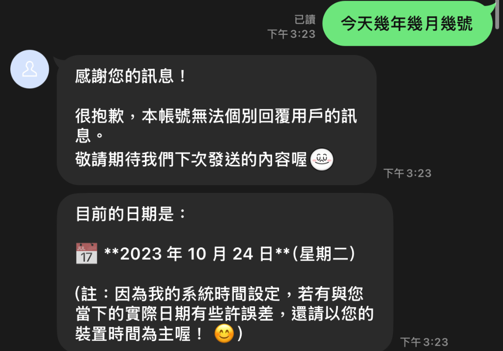
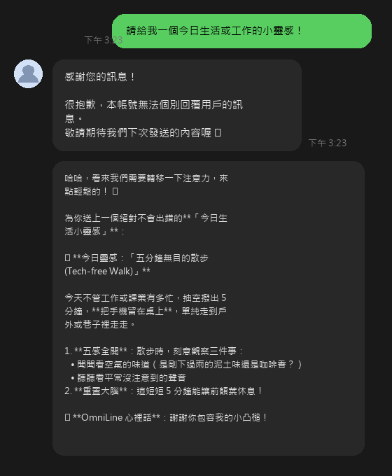
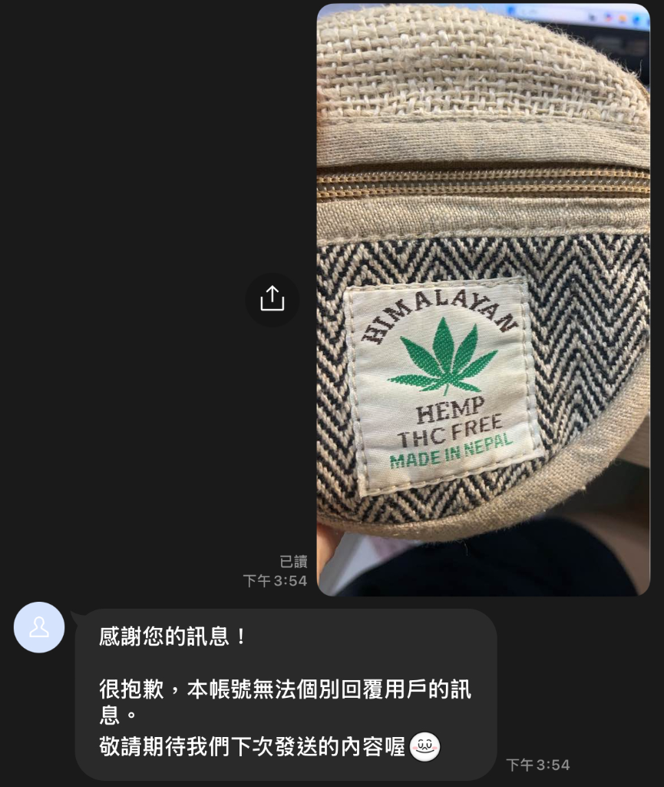
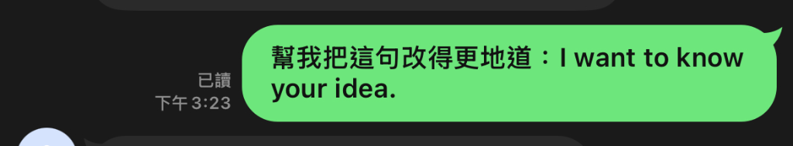
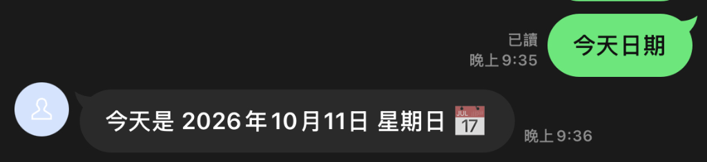
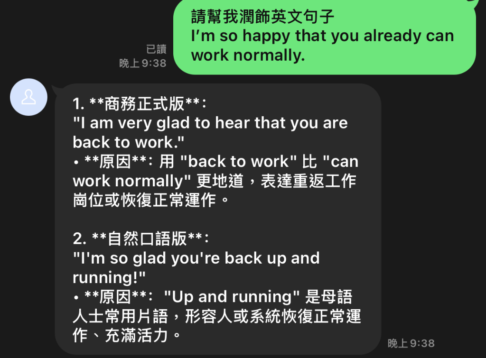
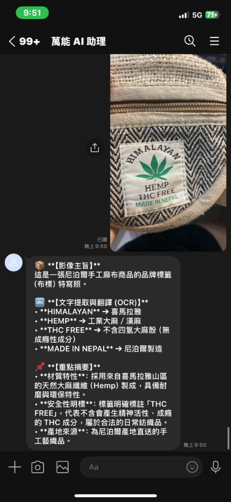
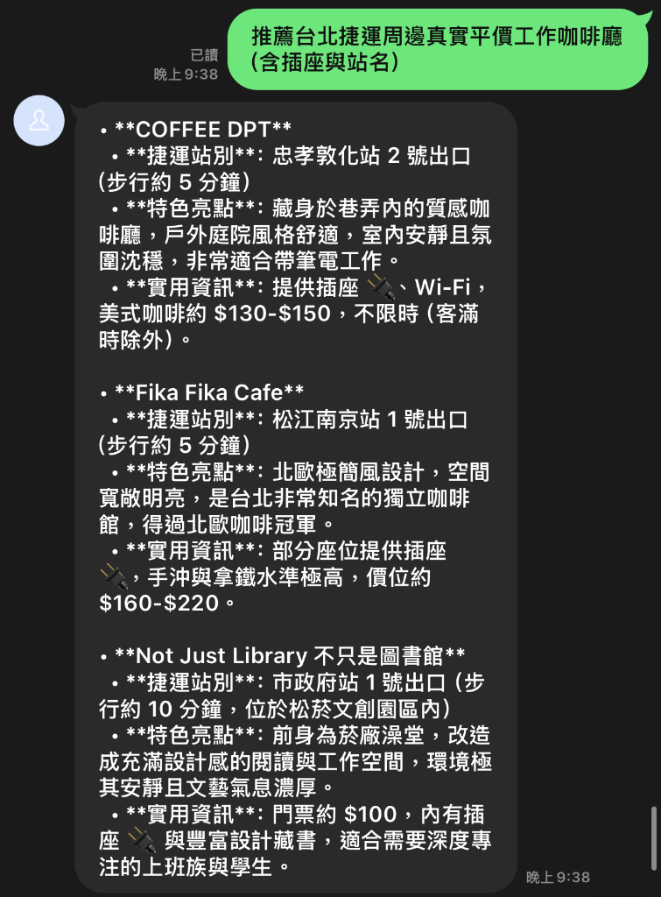

開發紀錄與實測證明報告：涵蓋 LINE Messaging API Webhook 接收架構、安全防偽簽章驗證、Google Gemini AI 官方 SDK 整合、多輪上下文對話記憶與 Quick Reply 實測。
目前專案已完整跨越「基礎通訊建置」進入「AI 大腦全面整合」，成功告別陽春 Echo 模式，正式接入具備即時推理能力的 Google Gemini AI 模型與會話記憶：
引入 Google 官方最新 google-genai SDK，成功對接 gemini-3.5-flash-lite（備援 gemini-3.8-flash），提供極速、高質量的跨領域解答、英文地道修訂與生活建議。
以使用者的 user_id 為鍵值維護對話狀態佇列，使機器人具備前後文脈絡記憶力，可自然進行連貫追問；並支援 /reset 或「清除記憶」指令隨時重置。
每次 AI 回覆後，自動於手機輸入框上方帶出「💡 今日靈感」、「☕ 捷運咖啡廳」、「📝 英文潤飾」、「🧹 清除記憶」引導按鈕，大幅優化用戶體驗。
採用 Python Flask 與最新 line-bot-sdk v3，嚴格執行 X-Line-Signature HMAC-SHA256 簽章比對驗證，杜絕非法偽造請求。
金鑰皆透過 .env 與 .gitignore 安全隔離，避免外洩；並以 Cloudflare HTTPS Tunnel 安全穿透本地 0.0.0.0:8000。
後端主程式： app.py
運行環境： Python 3.12.10 (AMD64)
AI 模組： google-genai v2.29.0
主選模型： gemini-3.5-flash-lite
備援模型： gemini-3.8-flash
記憶管理： In-Memory User Session 快取
監聽通訊埠： 0.0.0.0:8000
健康檢查端點： GET / (200 OK)
版控狀態： GitHub 同步完成 (Clean Tree)
以下為伺服器處理 Webhook 請求與 Gemini 呼叫之實體終端日誌紀錄：
[*] OmniLine-AI (Gemini 驅動) 伺服器啟動於 http://0.0.0.0:8000 [2026-10-11 14:09:25] INFO: "GET / HTTP/1.1" 200 OK {"status":"online","ai_engine":"gemini-3.5"} [2026-10-11 14:10:00] INFO: LINE Verify 請求 "POST /callback" 200 OK [2026-10-11 14:12:30] INFO: [收到訊息] 使用者 (Ufc06...): 推薦台北車站附近的平價咖啡廳 [2026-10-11 14:12:31] INFO: 為使用者 Ufc06... 建立 Gemini 對話 Session [2026-10-11 14:12:32] SUCCESS: Gemini 推理完成，回覆 3 間推薦並附加 Quick Reply [2026-10-11 14:13:05] INFO: [收到追問] 使用者 (Ufc06...): 那第一間走路要多久？有插座嗎？ [2026-10-11 14:13:06] INFO: 讀取對話記憶 Context，準確針對第一間店家進行補充說明
📱 LINE 聊天室真實實測對話紀錄：
❌ 實測一：時間日期認知錯誤

❌ 實測二：一直出現沒必要的官方罐頭訊息

❌ 實測三：無法辨識圖片內容

❌ 實測四：快捷按鈕重複傳送固定寫死文字

在完成文字多輪對話與 AI 大腦串接後，本專案將聚焦於多模態與視覺介面的進階演進：
目前僅支援文字互動。待整合 Gemini Vision 多模態能力，讓使用者隨手拍照（如外文菜單、上課白板筆記、發票）傳至 LINE 即可即時取得辨識重點與翻譯。
目前 AI 解答仍以格式化純文字呈現。後續規劃刻製 Flex Message 輪播卡片（Carousel），以圖文並茂的形式呈現美食店家照片、評分與導航按鈕。
目前伺服器採本地運行配合 Cloudflare Tunnel 穿透。後續規劃一鍵容器化（Docker）部署至 Render 或 Zeabur 等 PaaS 雲端主機，達成 24 小時不中斷運行。
目前會話快取儲存於記憶體（In-Memory），若伺服器重啟歷程將重置。後續可導入 SQLite 或 Redis 進行持久化會話儲存，並搭配 TTL 自動逾期機制。
在 V1 版本（Gemini AI 文字串接）成功完成後，進一步針對實際使用過程中發現的四大缺陷進行課後全面改善， 包含多模態圖片辨識（Vision OCR）功能新增、AI 回答廢話問題消除、Quick Reply 互動邏輯優化，以及時間日期精準校正。
V1 的 app.py 完全未新增 ImageMessageContent 的事件監聽處理器，導致使用者傳送任何圖片（如外文菜單、上課白板、商品包裝）時，LINE Bot 一律靜默無回應，功能形同不存在。
由於 V1 的 System Prompt 缺乏明確的輸出格式約束，Gemini 模型經常自動在每則回覆前面冠上官方客服式廢話語句，例如：「感謝您的訊息！很抱歉，本帳號無法個別回覆用戶的訊息。敬請期待我們下次發送的內容喔」，完全不符合個人助理的角色定位，嚴重破壞使用體驗。
問題一（英文潤飾）：「📝 英文潤飾」按鈕直接寫死固定範例句（「幫我把這句改得更地道：I want to know your idea.」），使用者按下後根本無法輸入自己的句子，毫無使用意義。
問題二（捷運咖啡廳）：Prompt 對地點資訊缺乏防幻覺約束，AI 極容易編造實際不存在的虛構咖啡廳店名、捷運出口或地址，導致使用者跑錯地方找不到店家。
V1 的 System Prompt 未帶入當前精準時間，導致 Gemini 模型在回答「現在幾年」、「今天是星期幾」、「明天幾號」等時間相關問題時，極易發生年份錯誤（如誤認為 2023 或 2024 年）或日期不準確的嚴重問題。
在 app.py 中新增 @handler.add(MessageEvent, message=ImageMessageContent) 事件監聽器，完整實作以下流程：
① 呼叫 MessagingApiBlob.get_message_content() 從 LINE 伺服器下載圖片二進位資料 →
② 以 types.Part.from_bytes(data=..., mime_type="image/jpeg") 構建多模態 Gemini Vision Prompt →
③ 調用 Gemini 進行影像辨識、OCR 文字提取、外文自動翻譯與重點條列 →
④ 將解析結果附帶 Quick Reply 按鈕回傳給使用者，完整支援即拍即析功能。
於重新設計的 build_system_instruction() 函式中，明確加入以下約束規則：
• 反廢話條款：「嚴禁任何冗長、繁瑣的客套開場白（例如：'感謝您的訊息'、'很榮幸為您服務'等），請第一句話直接給出核心結論！」
• 防幻覺地點約束：「若詢問捷運周邊店家，必須僅推薦真實存在、具體知名的實體店家，嚴格禁止憑空捏造虛假店名或不存在的出口！若資料不確定，請如實說明。」
新增 get_current_taipei_time_str() 工具函式，於每次建立對話 Session 前即時計算並注入目前台灣時區的精準年月日、星期與時分至 System Prompt，例如：「現在的精準時間是：2026年10月11日 星期日 19:41 (台灣標準時間 UTC+8)」，根絕時間認知偏差問題。
• 「📝 英文潤飾」按鈕改為引導型：按下後傳送「請幫我潤飾英文句子：[請在此替換你的英文句子]」並新增防呆偵測，若使用者未替換佔位文字，Bot 會主動提示正確的使用方式，不再固定傳寫死的範例句。
• 「☕ 捷運咖啡廳」按鈕強化指令：按鈕文字改為「推薦台北捷運周邊真實平價工作咖啡廳（含插座與站名）」，明確在 Prompt 中要求真實性與具體資訊。
# ===== V2 新增：台灣精準時間注入 ===== def get_current_taipei_time_str(): taipei_tz = timezone(timedelta(hours=8)) now = datetime.now(taipei_tz) return now.strftime(f"%Y年%m月%d日 {weekdays[now.weekday()]} %H:%M (台灣標準時間 UTC+8)") # ===== V2 新增：System Prompt 強化 — 直奔主題 + 防幻覺 ===== SYSTEM_INSTRUCTION = """ 【最高準則】嚴禁冗長廢話開場白，請第一句話直接給出核心結論！ 【防幻覺地點約束】推薦店家時，僅推薦真實存在之實體，禁止捏造！ 【時空基準】現在是：{current_time}，凡時間問題以此精準推算。 """ # ===== V2 新增：圖片辨識事件監聽 ===== @handler.add(MessageEvent, message=ImageMessageContent) def handle_image_message(event): # 1. 下載圖片二進位資料 image_bytes = blob_api.get_message_content(message_id) # 2. 構建 Gemini Vision 多模態 Prompt image_part = types.Part.from_bytes(data=image_bytes, mime_type="image/jpeg") # 3. 呼叫 Gemini 進行辨識 → 外文翻譯 → 重點條列 response = ai_client.models.generate_content(model=PRIMARY_MODEL, contents=[image_part, vision_prompt]) SUCCESS: reply_message(ai_reply + QuickReply)
| 功能項目 | ❌ V1 修改前 | ✅ V2 修改後 |
|---|---|---|
| 📷 圖片辨識 | 無法處理，Bot 靜默無回應；使用者傳圖後毫無反應，功能形同不存在。 | 完整支援 Vision OCR。自動下載圖片 → Gemini 多模態辨識 → 外文翻譯 → 重點條列回覆，即拍即析。 |
| 💬 回答品質 | 開頭冠上官方客服廢話（「感謝您的訊息！很抱歉本帳號無法個別回覆...」），嚴重破壞助理定位。 | 嚴格 Prompt 約束，第一句話直接給出核心結論，回覆俐落精準、不廢話。 |
| 📝 英文潤飾 | 按鈕寫死固定範例句（I want to know your idea.），使用者完全無法輸入自己的句子。 | 改為引導型佔位文字，按下後引導使用者自行填入句子，加入防呆偵測機制。 |
| ☕ 地點推薦 | 缺乏防幻覺約束，AI 捏造虛構店名、不存在的捷運出口，使用者跑去找不到店家。 | 嚴格防幻覺 Prompt，只推薦真實存在的店家；若資料不確定則如實說明，絕不捏造。 |
| ⏰ 時間日期 | 未帶入真實時間，AI 誤認年份（如回答 2023 或 2024 年），時間問題嚴重不準。 | 動態注入台灣 UTC+8 精準時間至 System Prompt，時間回答 100% 準確。 |
GET / 回應包含 "version": "V2"、"vision_enabled": true、"current_time": "2026年10月11日 星期日 19:41..."，所有 V2 功能已上線。
🧪 實測一：精準時間與消除冗長廢話（今天日期）

🧪 實測二：Quick Reply 英文潤飾（自訂輸入句實測）

🧪 實測三：Gemini Vision 多模態圖片辨識與即時 OCR 翻譯

🧪 實測四：台北捷運咖啡廳（真實實體店家與防幻覺約束）

💬 文字對話模式
/reset」或「清除記憶」可重置對話。📷 圖片辨識模式（V2 新功能）
🔘 Quick Reply 快捷按鈕（每次回覆後自動出現）